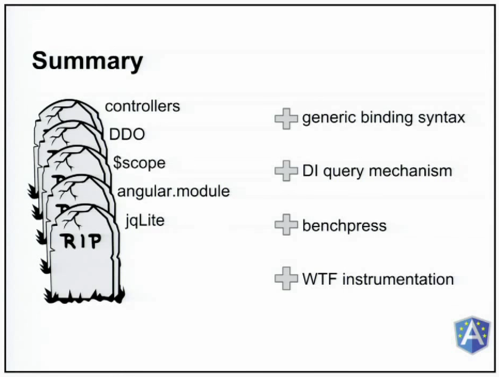

The past, present and future of AngularJS
Lessons from ngEurope 2014
Kevin Denver (@ToastShaman)
Angular 1.3: Overview
The best Angular yet!
A lot of performance improvements went into this release.
4.4x faster and 73% less garbage to collect (Benchpress)
- IE8 is no longer supported
- Reduced Memory Consumption
- Faster DOM parsing
- Built in One-Time-Binding
- ngModelOptions
- ngMessages
- ngAria
Angular 1.3: ngModelOptions / ngMessages
<!-- One Time Binding -->
<span ng-bind="::user.lastName"></span>
<!-- ngModelOptions (updateOn) -->
<input type="text" name="userName"
ng-model="user.name"
ng-model-options="{ updateOn: 'blur' }"
ng-keyup="cancel($event)" />
<!-- ngModelOptions (debounce) -->
<input type="text" name="userName"
ng-model="user.name"
ng-model-options="{ debounce: 1000 }" />
<button ng-click="userForm.userName.$rollbackViewValue(); user.name=''">Clear</button><br />
<!-- ngMessages -->
<div ng-messages="myForm.myName.$error" style="color:maroon">
<div ng-message="required">You did not enter a field</div>
<div ng-message="minlength">Your field is too short</div>
<div ng-message="maxlength">Your field is too long</div>
</div>Angular 1.3: In Production
Where the compiler has created a new scope, the scope and either ng-scope or ng-isolated-scope CSS class are attached to the corresponding element. Tools like Protractor and Batarang need this information to run, but you can disable this in production for a significant performance boost.
Configure $http service to combine processing of multiple http responses received at around the same time via $rootScope.$applyAsync.
$compileProvider.debugInfoEnabled(false);
$httpProvider.useApplyAsync(true);An expression that starts with :: is considered a one-time expression. One-time expressions will stop recalculating once they are stable, which happens after the first digest if the expression result is a non-undefined value.
<span ng-bind="::user.lastName"></span>
<!-- Use ng-bind instead of {{var}} because it uses less memory -->
<span ng-bind="order.amount"></span>
ngAria: Accessible Rich Internet Applications
The goal of ngAria is to improve Angular's default accessibility by enabling common ARIA attributes that convey state or semantic information for assistive technologies used by persons with disabilities. Most of what ngAria does is only visible "under the hood".
<!-- Roles: What does this thing do? -->
<div role="img" style="background-image...">
<!-- States: The current condition of this particular thing -->
<md-input-group aria-disabled="true">
<!-- Properties -->
<md-checkbox aria-label="Unsubscribe">
<!-- Do not put ng-clicks on div's -->
<md-button role="button" tabIndex="0" ng-click="woohoo()" ng-keypress="woohoo()">Software Patterns in Angular: Anti-Patterns
All of the design techniques and pitfalls that have applied for 50 years still apply.
Focus on writing good software rather than asking "Is this the Angular way?"
- War and Peace Controllers
Extremely long controllers that cover several epic code stories and philosophical musing. - Link Function of Doom
Putting all of the code to drive a complicated directive inside the link function. - “Forgot About Dialogs” Global State
Using services to store “per-page” state and clearing upon route change. - Magical Prototype Chain Dependency
Depending on one or more properties of the prototype chain to
(magically) be present. Avoid inheritance for controllers.
Software Patterns in Angular: Active Record Pattern
// order.factory.js
function OrderFactory($http) {
function Order(order) {
angular.extend(this, order || {});
this.toppings = this.toppings || {};
}
Order.prototype.addTopping = function(topping) {
this.toppings.push(topping);
};
Order.prototype.submit = function() {
return $http.post('http://pizza.example.com/orders', this).then(function(response) {
return new Order(response.data);
});
};
Order.getById = function(orderId) {
return $http.get('http://pizza.example.com/orders/' + orderId).then(function(response) {
return new Order(response.data);
});
};
return Order;
}
angular.module('pizza-app').factory('OrderFactory', OrderFactory);Software Patterns in Angular: Active Record Pattern
// order.controller.js
function OrderController(Order) {
var self = this;
self.order = new Order();
self.addTopping = function(topping) {
order.addTopping(topping);
};
self.placeOrder = function(order) {
order.submit().then(function(savedOrder) {
console.log(savedOrder);
});
};
}
angular.module('pizza-app').controller('OrderController', OrderController);Angular Material: Material Design
Material design (codenamed quantum paper) is a design language developed by Google and announced at the Google I/O conference on June 25, 2014. Expanding upon the "card" motifs first seen in Google Now, it is a cleaner design with increased use of grid-based layouts, responsive animations and transitions, padding, and depth effects such as lighting and shadows.
Angular 2.0: R.I.P
Angular 2.0: AtScript
ES6 and Google Traceur
// home.controller.es6.js
class Baconator {
constructor($http) {
this.$http = $http;
this.url = 'https://baconator-bacon-ipsum.p.mashape.com/?type=all-meat';
this.headers = { X-Mashape-Key: 'x' };
}
baconize(paras=25, sentences=15) {
var headers = this.headers;
var params = {paras, sentences};
return this.$http.get(this.url, {headers, params});
}
}
class ToDoItem {
constructor(who, what, notes) {
this.who = who;
this.what = what;
this.notes = notes;
this.done_ = false;
}
markAsDone() { this.done_ = true; }
get isDone() { return this.done_; }
}ES6 and Google Traceur
// home.controller.es6.js
class HomeController {
constructor(Baconator) {
this.todos = [];
Baconator.baconize().success(data => {
data.forEach(item => {
this.todos.push(new ToDoItem(item.who, item.what, item.notes));
});
});
}
}
angular.module('ngeurope').service('Baconator', Baconator);
angular.module('ngeurope').controller('HomeController', HomeController);Thank You!
https://github.com/ToastShaman
@ToastShaman
http://www.zuehlke.com